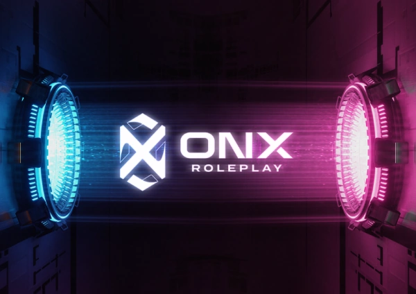
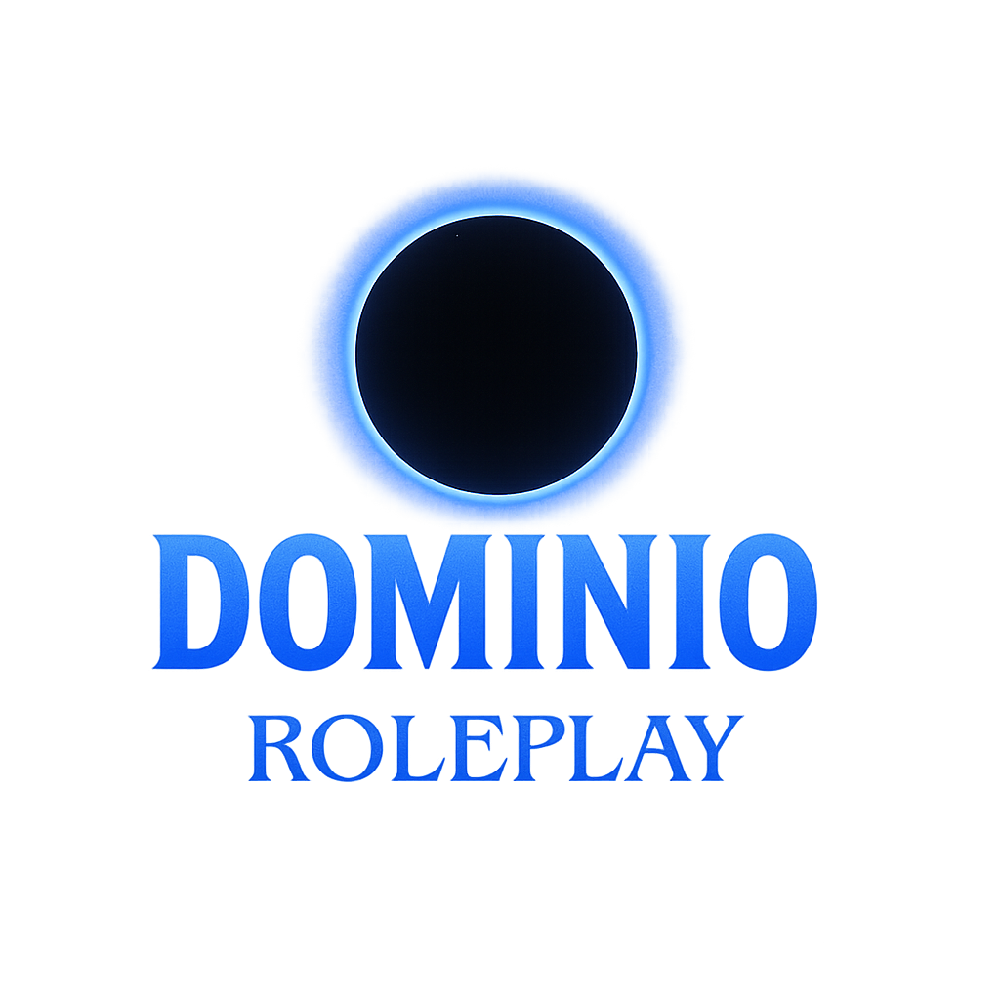

Infames Legacy
Servidor de rol de habla hispana abierto en 2020. Los fundadores del servidor son Betra y Perxitaa. En estos momentos el servidor no se encuentra activo.
Descubre los servidores activos e inactivos, como también información sobre ellos.
Servidor de rol de habla hispana abierto en 2020. Los fundadores del servidor son Betra y Perxitaa. En estos momentos el servidor no se encuentra activo.
ONX es un servidor nuevo de rol en España, este tiene otro servidor de habla inglesa que es el principal, recientemente se ha abierto el servidor de habla hispana.

Dominio es un servidor de rol fundado por MarthaConill y otras personas. Tras el abandono de otras personas del proyecto, este finalmente ha cerrado.
